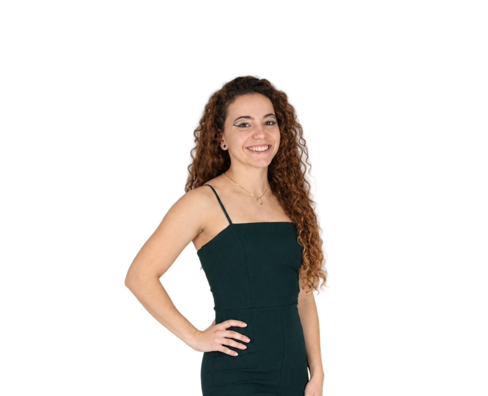

La plataforma digital de salud diseñada para abordar las dificultades que aparecen en el día a día del paciente, aportando al profesional sanitario información relevante.
Sin apoyo entre consultas, tomando decisiones que impactan en su salud.
pacientes crónicos no sigue correctamente su tratamiento.
Pérdida económica anual estimada por la no adherencia en el sistema sanitario español.
No nos centramos únicamente en si un paciente toma o no su medicación. Nos centramos en detectar y abordar las causas que pueden llevarle a tomar decisiones que perjudiquen su salud.
El sistema identifica las dificultades que interfieren con el tratamiento en la vida cotidiana.
Proporcionar apoyo cuando aparecen dudas o dificultades, antes de que se conviertan en un problema mayor.
Ayudar al profesional sanitario a comprender mejor qué ocurre entre consultas y aprovechar mejor el tiempo de atención.
Queremos que cada persona pueda encontrar apoyo cuando lo necesita, con la tranquilidad de acceder a información basada en fuentes sanitarias verificadas.
Queremos evitar que las dudas y dificultades que aparecen en el día a día condicionen decisiones que puedan afectar a su salud sin el apoyo adecuado.
Y queremos que el profesional sanitario pueda conocer mejor lo que ocurre entre consultas para comprender a sus pacientes y ofrecerles una atención más completa.
Adhere es una herramienta clínica digital que identifica la causa raíz de la falta de adherencia mediante un seguimiento continuo y traslada esa información clave al profesional sanitario. A diferencia de otras herramientas, facilita las intervenciones tempranas y optimiza las decisiones clínicas.
Co-creada por profesionales sanitarios y pacientes bajo colaboraciones y una Investigación para garantizar su adecuación clínica real.
La información de Adhere se desarrolla a partir de fuentes sanitarias y científicas verificadas, como guías clínicas, protocolos, organismos y sociedades profesionales.

Soy Paula García, estudiante de último curso de Medicina y fundadora de Adhere.
Para mí, la medicina siempre ha sido cuidar de personas, no solo tratar enfermedades. Y cuidando de las personas que más quiero fue cuando vi un problema que antes no había visto.
Investigar esa duda me llevó a descubrir la magnitud de un problema histórico de la medicina y a diseñar Adhere, con el propósito de estar ahí justo donde se toman las decisiones que influyen en la salud.
Si trabajas en el ámbito sanitario, investigas sobre adherencia o estás interesado en colaborar con el proyecto, me encantará conocer tu perspectiva.